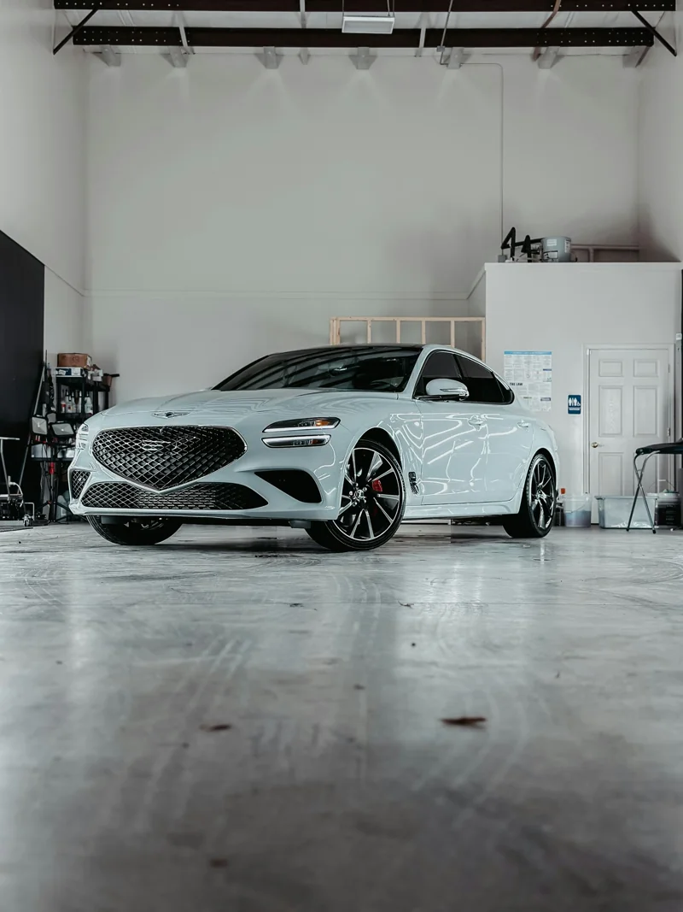
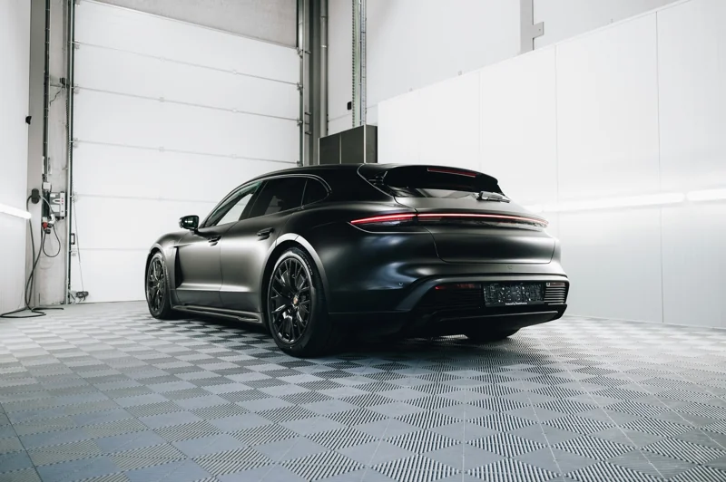

Comfort in the sun
Nano ceramic film helps reduce solar heat through your glass for a more comfortable cabin on sunny Houston drives.

(Side Windows + Rear Windshield)
Your Memorial Tint Lab, right on Long Point Rd. Nano ceramic window tint helps reduce solar heat and glare, adds UV protection and gives your vehicle a clean, consistent finish. Open daily, 9 am – 6 pm.
Starting price. Confirm your vehicle, film, shade and final package with the team before booking.
From Long Point Rd errands to your daily commute, nano ceramic tint brings more than darker glass. Its ceramic-particle technology helps manage solar heat and UV exposure while giving your side windows and rear windshield a coordinated finish.
Nano ceramic film helps reduce solar heat through your glass for a more comfortable cabin on sunny Houston drives.
Help soften harsh sunlight with nano ceramic tint in a shade chosen for your vehicle and visibility needs.
UV protection helps limit sun exposure that contributes to fading in seats, dashboards and interior trim.
Get a clean side-and-rear finish with nano ceramic tint. Discuss the right balance of privacy, visibility and style with the team.
Performance depends on the film, shade and existing glass. Confirm the specifications of your selected package. Front windshield coverage is outside this offer.
A good finish starts before the film touches the glass. At Tint Lab Memorial, it starts with understanding your vehicle, the look you want and how you use it.
Tint Lab brings window tinting and vehicle protection together. For your tint, start with a clear quote, compare your options and let the team take care of the finish.
Find my tint setupKnow what you’re getting before you book. The Memorial team will help you talk through coverage, film options and the look you want.
Nano ceramic tint for your side windows and rear windshield, with your exact vehicle price confirmed before installation.
A ceramic-particle layer helps manage heat and UV exposure. Confirm the exact film series and specifications included with your vehicle quote.
Compare the available shades and discuss visibility, existing glass and window compatibility.
Glass preparation, film fitting and attention to the edges all contribute to a clean, consistent finish.
Visit us at 8700 Long Point Rd, Unit 403, Houston, TX 77055. Open daily, 9 am – 6 pm. Ask about appointment availability and timing for your vehicle.
Discuss removal, aftercare and warranty terms for your chosen film, so you know what to expect.
A closer look at the vehicles featured by Tint Lab. Find inspiration for your own upgrade.




Real reviews from the Tint Lab Memorial Google listing.
Visit the Memorial Google listing ↗“The team was very professional, they knew their product so well… Super fast turnaround and the quality is flawless.”View on Google ↗
“The car looks much better and I’m happy he talked me into the 70% ceramic clear tint. It was definitely the way to go.”View on Google ↗
“They did a great job on my cars and got the job done quick! … their customer service was awesome!”View on Google ↗
“They did such a good job tinting my windows. No bubbles at all! It’s perfect!!”View on Google ↗
“Exceeded my expectations!!! Tint lab made my car look so clean! … 10/10 recommend!”View on Google ↗
Ask about old-film removal, any additional charges, installation timing and warranty terms before booking.
A few details. A clearer idea of your next upgrade.
Full vehicle nano ceramic tint starting at $199 includes the side windows and rear windshield. The front windshield is outside this offer. Confirm your exact vehicle price, included glass and film with the team before booking.
Nano ceramic tint uses a layer of tiny ceramic particles to help reduce solar heat and UV exposure through your windows. It combines everyday driving comfort with the shade and finish you choose. Ask Tint Lab for the exact film series and performance specifications included in your quote.
Talk through the available shades with the team. Your existing glass, visibility preferences and the requirements for each window help determine a suitable setup.
The time depends on your vehicle, the selected coverage and whether old film needs removing. Confirm the appointment length and pickup arrangements when you book.
Tell the team about existing film when requesting a quote. They’ll confirm whether removal is needed, what it involves and whether there’s an additional charge.
Ask for the warranty terms for your selected film and installation. The team can also explain curing time, when to use your windows and how to clean the film.
Visit Tint Lab at 8700 Long Point Rd, Unit 403, Houston, TX 77055, United States. We’re open daily, 9 am – 6 pm. Get directions on Google Maps, and check the shop’s Google listing for contact information and current opening hours before you travel.
Full vehicle nano ceramic tint. Side windows + rear windshield.